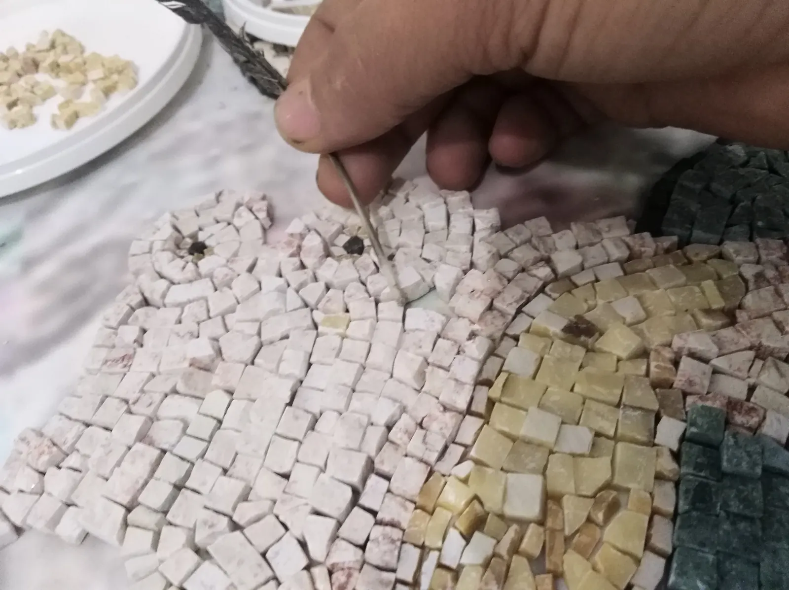
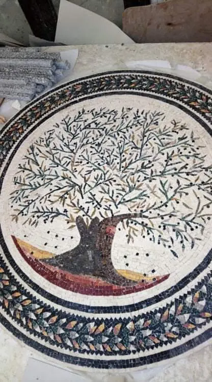
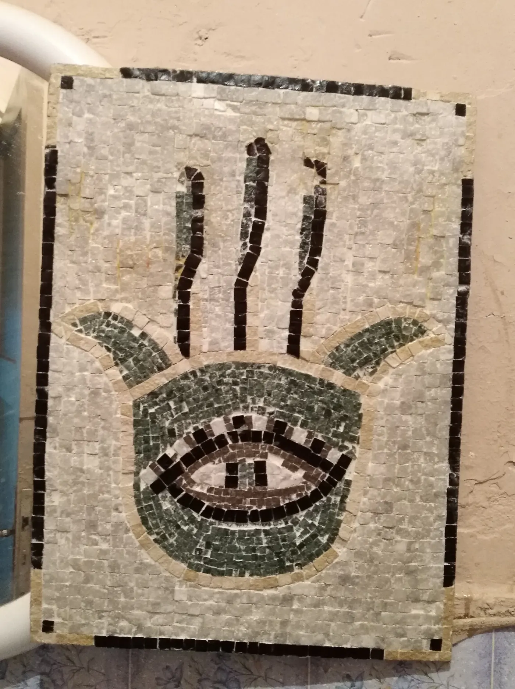
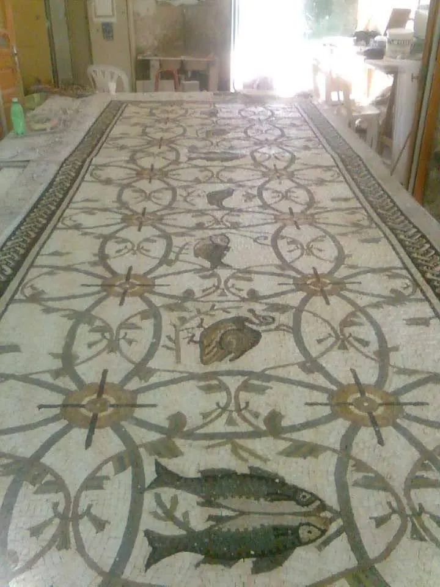
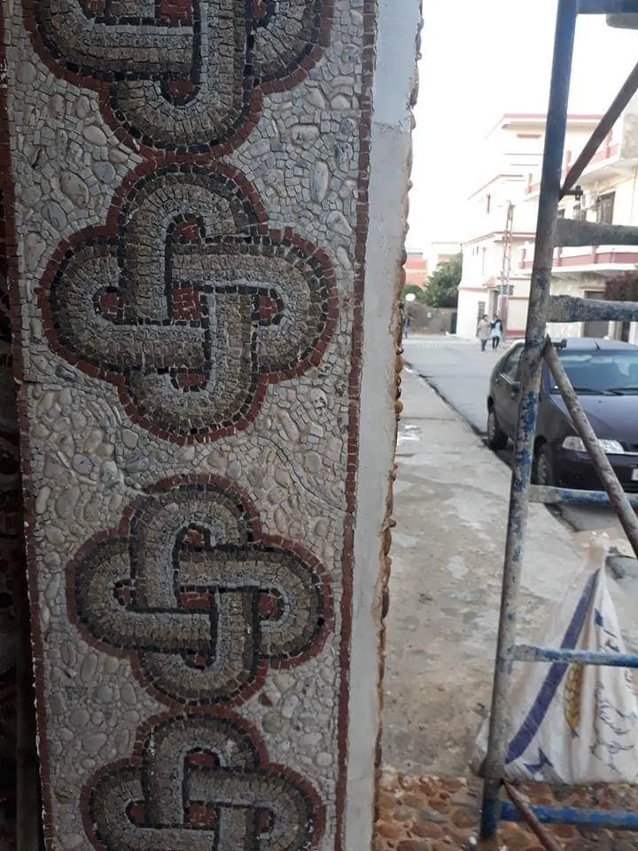
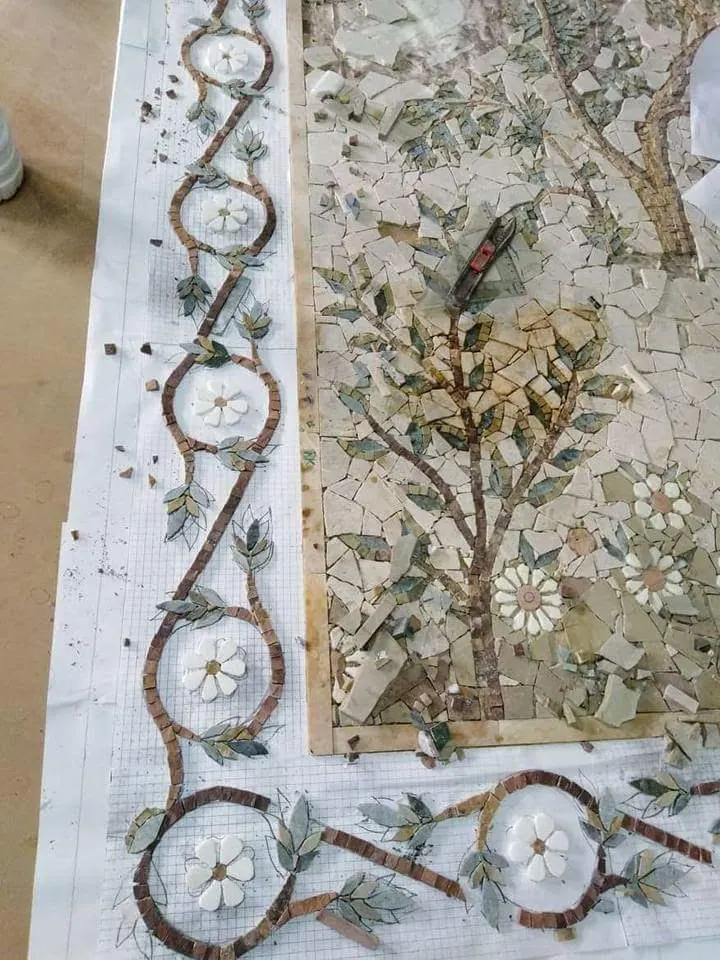
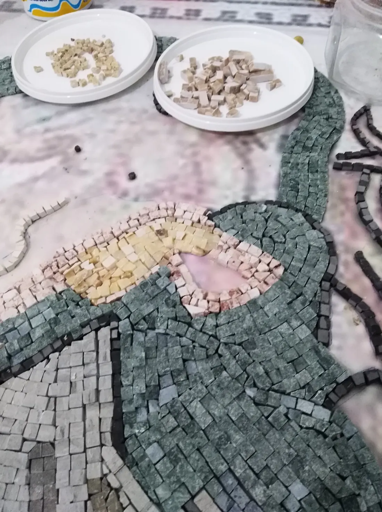
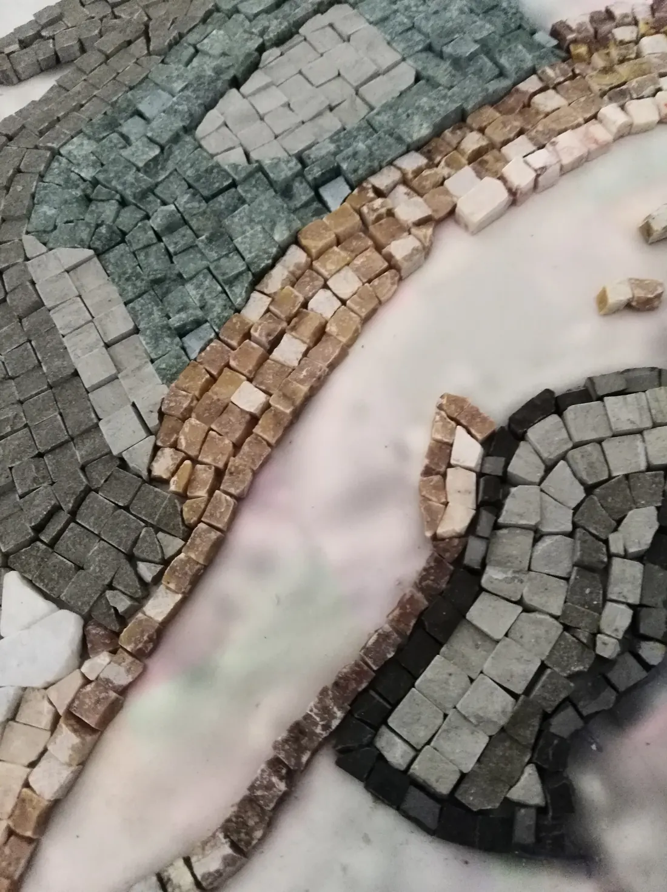
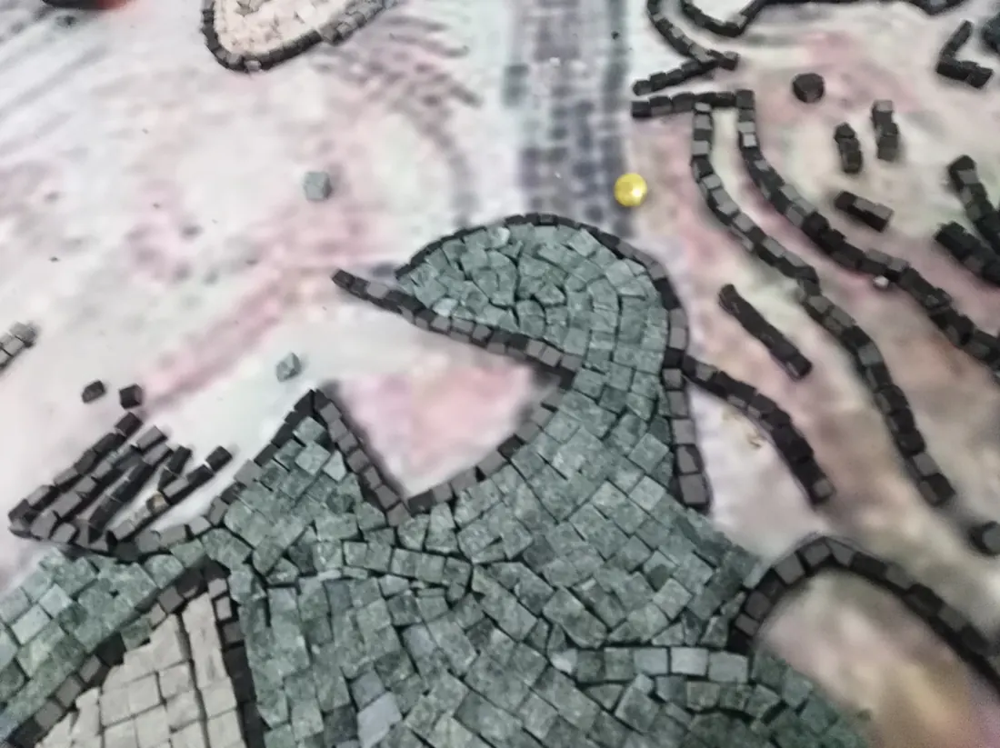

LITHOS IMPERIAL
The art of antique mosaic, made to measure
Original creations and reproductions shaped by hand in natural stone, inspired by the traditions of Carthage and Rome.
A work begins with a stone.
Every mosaic is assembled as a work of art. The material, the cut, the direction of the tesserae and the natural irregularities of the stone give it character. From a small collector's piece to a monumental composition, the atelier creates original works and reproductions, fitted to the size and spirit of your project.
The works
Click to examine the details





- Panels and collector's pieces
- Murals and frescoes
- Floors, medallions and compositions
- Pools, basins and fountains
Create what does not exist yet
An idea, an image, an emotion or simply a material can become a mosaic artwork. The atelier adapts subject, dimensions, materials and shades to your project.
- Idea
- Conversation
- Artistic study
- Choice of materials
- Handmade execution
- Finished work
Masterpieces of the past, reinterpreted by the mosaicist's hand
Reproductions of historic mosaics and reference works, faithful to their composition and detail, at the size you choose. Inspired by the mosaic traditions of Carthage and Rome. Ancient public-domain works may be reproduced freely; a work still under copyright requires permission from the rights holders.
The hand before the machine
Every tessera shapes the work. Variations in colour, texture and veining are not flaws to erase: they are the personality of the stone. Cut and set one by one, by hand.



In the atelier
Kosta Imed LITHOS, mosaic craftsman, creates bespoke mosaic artworks in Camporosso Mare (Liguria). When a project calls for it, he works with owners, architects, decorators and designers: you imagine the space, the atelier makes the mosaic.
Present my project
An idea, an image, a space? Describe it: every request is studied individually by the atelier.
Camporosso Mare, Imperia, Italia